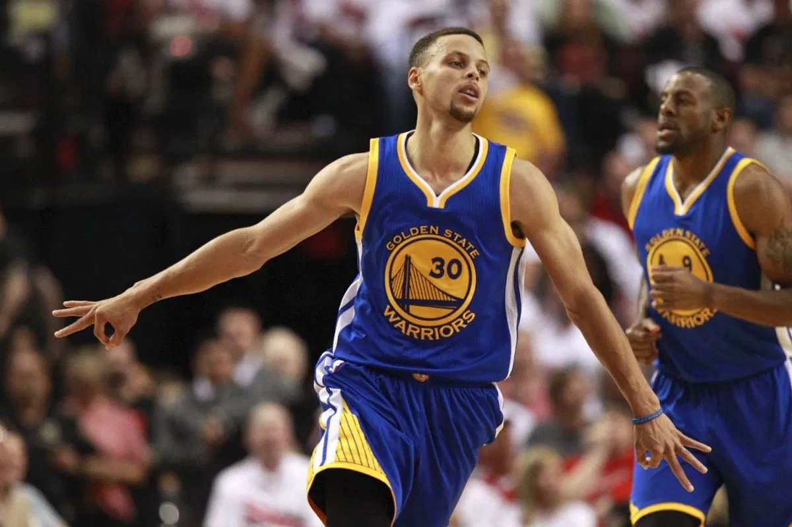

Best Basket player
Моё фото:

американский профессиональный баскетболист, выступающий за команду Национальной баскетбольной ассоциации «Голден Стэйт Уорриорз» и сборную США
All-star player
Баскетбольное мероприятие, которое включает в себя разнообразные конкурсы и развлекательные программы с кульминацией в виде Матча всех звёзд НБА. Проводится ежегодно в феврале.
В «Матче всех звёзд НБА» команда Леброна Джеймса одержала победу
над командой Янниса Адетокунбо со счетом 178 на 164.
Титул самого ценного игрока получил Кевин Дюрант.
NBA2K20
Описание
NBA 2K20 is a basketball simulation video game developed by Visual Concepts and published by 2K Sports, based on the National Basketball Association (NBA). It is the 21st installment in the NBA 2K franchise and the successor to NBA 2K19. Anthony Davis of the Los Angeles Lakers is the cover athlete for the regular edition of the game, while Dwyane Wade is the cover athlete for the 'Legend Edition'.
NBA 2K20 was released on September 6, 2019, for Microsoft Windows, Nintendo Switch, PlayStation 4, and Xbox One and on November 19, 2019 for Stadia.
Gameplay
NBA 2K20
Описание
Gameplay
NBA 2K20 is a basketball simulation game which, like the previous games in the series, strives to realistically depict the National Basketball Association (NBA), as well as present improvements over the previous installments. The player mainly plays NBA games with real-life or customized players and teams; games follow the rules and objectives of NBA games. Several game modes are present and many settings can be customized. Up to six expansion teams can be created and used in both MyLeague and MyGM Modes, with the possibility of a 36-team league, and any team can be relocated and rebranded.
Along with the current season's teams and players, previous games in the series have featured NBA teams from past eras, such as the 1995–96 Chicago Bulls and the 1985–86 Boston Celtics. NBA 2K20 adds six more such teams, such as the 2015-16 Cleveland Cavaliers.
As with other games in the series, the in-studio pregame and halftime shows are based on the real-life NBA on TNT presentations, featuring Ernie Johnson, Kenny Smith and Shaquille O'Neal, with the latter two analysts also appearing as players on the 1993-94 Houston Rockets and 1994-95 Orlando Magic/2000-01 Los Angeles Lakers/2005-06 Miami Heat, respectively. During games, the announcers are Kevin Harlan, Greg Anthony, Chris Webber, Steve Smith and Clark Kellogg, with Doris Burke and David Aldridge as the sideline reporters.
For the first time ever in the NBA 2K series, all twelve teams from the WNBA are included; however, they can be only used in Play Now (one-game exhibition) and single-season modes. It includes Candace Parker as well as other WNBA all stars.